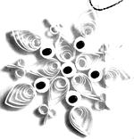
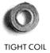
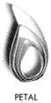
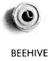
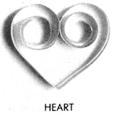
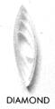
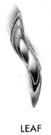
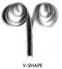
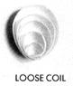

This antique craft will challenge your creativity.
In my search for unique gifts to handcraft for my family, I found a photograph of a quilled picture so delicate and intricate it seemed like a fine-line drawing. It set my creative gears awhirl, and for a week I worked late and had fun experimenting with my newfound interest. I never dreamed that my hobby would grow into a business.
Nearly 10 years later, my first quilled floral arrangement (framed as a birthday present for my mother-in-law) is still one of my favorite pieces. But as I became more involved with the craft, the enthused response of family and friends, added to my own interest in quilling, spurred me to make my own designs. I expanded into Christmas ornaments and eventually built up an inventory large enough to enter my work in a local arts and crafts show.
Now, after years of quilling, I can assure you that the opportunities opened up by this unusual and highly flexible medium are endless. It's given me a profitable part-time income (my biggest thrill was earning $900 in a farmers' market Christmas crafts show), and I love teaching quilling workshops to children and adults.
Getting started in quilling, the art of paper sculpture, is not expensive. You'll need a few basic materials that you can buy at most arts and crafts stores.
A quilling tool, a metal instrument with a tiny slit in one end, will probably cost between $1 and $1.50 (I'm still using my first one). You'll also need a package of quilling paper, which runs around $1.75 and will last for quite some time. I buy wholesale from Quill Art (11762 Westline Dr., St. Louis, MO 63141; 314/872-3181; catalog $1), because I like the feel of its paper, though I'm sure other companies offer comparable quality. Try a multicolored pack, which will give you an array of shades to play with. (I use 1/8"-wide paper, though other widths are available, and, again, you should experiment to see what suits your creativity best.) Other necessities are a bottle of white glue (I prefer Sobo), hatpins or toothpicks for applying it, and a sheet of Con-tact-brand clear adhesive-backed paper. A clipboard or a 9" X 12" piece of heavy cardboard can serve as a flat work surface.
To set up your workboard, tape a sheet of white or graph paper (later you may want to substitute a design you've sketched) onto your work surface. Peel a piece of Contact the size of your workboard and tape it to the surface sticky side up. It will hold the paper curls in place until you want to remove your completed piece. Now you're ready to go.
To get a feel for your quilling tool, cut a piece of paper a few inches long, and-holding the instrument in your right hand (left for lefties)-insert one end of the paper into the slit. Now turn the tool clockwise, gently guiding the paper. Once the paper curls, release it from the tool. You can let the resulting curl expand as much or as little as you wish, and you can shape it by pinching or pressing it with your fingers. When you're happy with your design, press it gently onto the Con-tact paper and-where necessary-carefully apply a dab of glue with a hatpin or toothpick to hold the shape together.
To gain confidence, begin by experimenting with the basic shapes illustrated here. As the photos show, you can combine individual shapes to form an endless variety of flowers, snowflakes, butterflies, birds, and abstract art. When you're satisfied with the design, glue the shapes together. Let dry, then lift the artwork from the Con-tact; it's ready for use.
My larger creations, mostly one-of-a-kind originals, I put into three-dimensional frames that I buy wholesale from Intercraft Industries Corp. (P.O. Box 1227, Statesville, NC 28677; 704/873-2591; free catalog). I sell these pictures for $10 to $35.
I also make delicate quilled Christmas ornaments to which I add small beads. My minipictures I frame in wooden curtain rings. They are pretty additions to the wall or Christmas tree, or I can hang them as a mobile. These rings come wholesale and unfinished from Gould Mersereau Co. (P.O. Box 1231, Long Island City, NY 11101; 718/361-8120; free catalog). When they arrive, I sand and stain each, then place a small screw eye at the top. The snowflakes and minipictures sell for $2.50 and up apiece.
Once you've mastered the basics and made a few pieces, you'll probably want to come up with some curls of your own.
For those who decide to turn quilling into cash, here are a few words of wisdom.
First, make sure you've built up a substantial inventory before you apply for acceptance into an arts or crafts show.
Second, order attractive business cards. I can't stress enough how valuable this investment can be. I've gotten more orders than I can count by having cards available for browsers at all crafts shows. I also enclose one with any purchase.
Finally, since many people have no idea what quilling is, it's wise to type up a little sheet on the history of this unique craft and run off copies for those who are interested. (See "The Traditional Art of Quilling" sidebar.) I've framed one and hang it wherever I have my work on display.
Lana Bates, who considers herself a self-taught craftsperson, has also taken art courses at the Universities of Connecticut and Hartford, as well as the Wadsworth Atheneum. She has experimented with sculpting, painting, collage, pastels, drawing, and, during the past decade, quilling.
Quilling, first known as paper filigree, is the art of rolling thin strips of paper, bending and molding these curls into shapes, then putting the shapes together to form designs.
In the 4th and 5th centuries, extremely intricate, lacelike filigree work of fine gold and silver wire was found on ancient pillars, vases, and tombs in various parts of Europe. Around the 13th century, similar ornamental work became popular in Spain, Italy, and France, but by now the artists used strips of paper, rolled loosely, placed on edge, and gilded to resemble precious metal. It supposedly fooled even experts at first glance. During this period, paper filigree was almost exclusively the work of nuns and monks, who decorated religious articles with it.
Paper filigree did not win recognition as a major art form until the late 17th century, when it began to appear as other than purely religious ornamentation. Seventeenth and 18th century tea caddies, coats of arms, and picture frames containing paper filigree are now in various museums and private collections throughout the United States and Europe. By the Victorian era, fashionable ladies began to learn paper filigree along with embroidery and needlepoint.
The term quilling, as we call the craft today, is probably American. Some say the paper was originally curled around a feather quill. Others claim that once the strips of paper are curled and released, they resemble a row of barbs on a feather, or quill. Most surviving early American quilled pieces are sconces and coats of arms, many of them from the Boston area. The Metropolitan Museum of Art, other museums, and private collections have quillworks dating back to the 1600s.
After the early 19th century, no notable works of quilling appeared, and by 1950 the craft seemed a nearly lost art. Since then, as handicrafts have gained in popularity, quilling, too, has had a small revival. I think it's here to stay.
Tight Coil: Roll from one end tightly. Hold until glued. Release from tool, and glue the end.
Loose Coil: Roll from one end tightly, then loosen tension and release from tool. Glue one end, pulling edges to one side.
V-Shape: Fold the paper in half. Roll each end outward, away from the fold. If desired, secure the V's point with glue.
Beehive: After rolling and gluing a tight coil, push the inside up from the center with a pencil or other blunt object to contour its shape. This adds dimension. Glue inside.
Teardrop: Make a loose coil. Pinch one end to a point.
Petal: Bend the tip of a teardrop slightly to one side.
Diamond: Start with a loose coil and pinch the opposite ends. Shape with the fingers so that the center remains in the middle.
Leaf-. Bend one or more ends of a diamond.
Heart: Fold the strip of paper in half. Roll the ends inward toward the center of the fold. Glue the adjoining edges.
|
 |
 |
 |
|
 |
 |
 |
|
 |
 |
 |